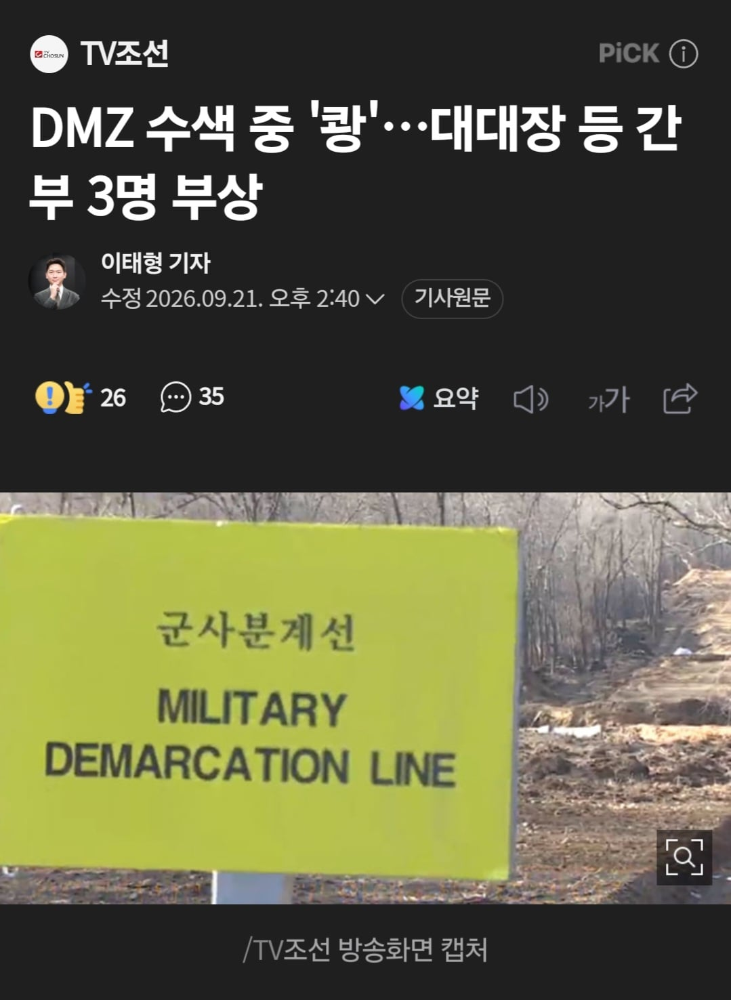
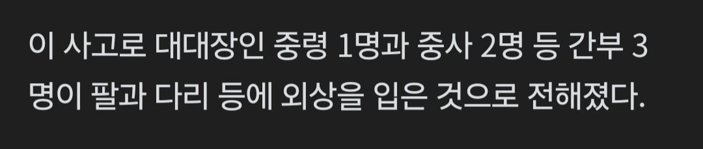

https://n.news.naver.com/article/448/0000640603


https://n.news.naver.com/article/448/0000640603
며칠전에 국방부 브리핑중에 기자가 극대노 했다는 뉴스를 유튭에서 봤었는데, 원칙과 기준에 따라서 단호하게 대처하고 있다며 대응 실패를 부정하던 합참공보실장 놈, 지금 어떤 표정 짓고 있을지 궁금하네.
미리 응수 키는 맛포티들 뭐함? 왕년에 피오라 좀 잡았나봄?
위험지역인데 저런건가? 아님?? 머지??
비무장지대라고 해도 평소에 다니는 길목은 정해져 있고 다른 지역은 지뢰 탐지를 안했기 때문에 절대 안들어감
10년전 발목지뢰처럼 의도적으로 매설해둔거임
수색대나와서 아는데 정해진 길목이 있음 수색로 낮에 수색로확인하고 > 밤에 해당지역에 매복함 둘은 다른조이긴하지만 암튼 그럼
Gop 대대본부 지통실 근무였는데 수색대 애들 야간 매복하는거 보고 들을때마다 진짜 짠하드라 고생했다
땡큐 지통실근무자면..우리가 맨날 통문열어달라고 하면 무전잡아주는쪽인가 gop도 쉽지않지 우리야 뭐..들낙들낙하니까..부대는 격오지에 안있긴했거든 격오지면 px나 통신이나 다 제한아녀?
난 7사단쪽 대대 OP 상황병이었어서 통문 여닫고 이런거 상황 일지 적고 간부가 사단에 보고하고 그런것만 했던거 같은데 OP에는 PX도 형식상 있어서 크게 힘들진 않았음 나는 병사라 싸지방 없는거 빼곤 다 괜찮았음 오락기도 있었고 노래방에 6개월 버티면 휴가 13박 14일 나오고 그랬으니까 나름 만족 했음
군생활 동안 GOP 3번 갔나...? 기억도 잘 안나내 ㅋㅋ
소초 나가있는 중대 애들이랑 GP가 진짜 고생이지 거긴 진짜 황금마차 다녔고 GP 애들은 미칠라고 하드만
수색 나가는거 안무서웠어? 나는 TOD랑 구두 묘사로만 들었는데 꽤 살벌하다던데
첨엔 무서움 우리는 실제 수색로에 지뢰가 박혀있긴했음 왜 안치우는지 의문
(지뢰) 를 놓고 8각으로 나무박혀서 밟을순없는데 수색로 바로 옆에 전시 되어있었음 ㅋㅋㅋ...
사실 길은 이미 닦여있는곳이라 수색가다보면 안무서워지는데.
가끔 저런 이슈있을땐 지탐기 쓰는데 지탐기쓰는날은 진짜 무섭더라.
지탐기 요즘은 목함 이런거 다 탐지한다던데 구형은 그냥..쇠 탐사인데 솔직히...dmz 죄다 총알밭이라..10걸음도 못가서 삑삑대는곳에 지탐기했으니 괜찮아 이러고 가는게 말이안되는데...참..
근데 반정도는 너가 아는 수색매복이였고
다음 반은 땅굴 찾는 사업한다고 dmz에 진지 치고 진지에서 지키는? 유탄발사기 설치하고 지키는 그런거라
수색이 사라져서 실제 갈땐 차타고 들어가고 진지에서 낮에 지키다가 밤에 매복조랑 차타고 교대 이거라서 괜찮았던듯
와 중령이 당했다고??
현무 갖다박고 싶네
북괴새끼 장난질에 맨날 당하기만 하네
사상자라고해서 사망자 나온줄 ㄷㄷ
댓글에 영포티새끼들 하다하다 북괴 시종짓하고 있네 ㅋㅋ
아직 북파공작원 있나
빨갱이 새끼들 몇 모가지 따버려야될꺼같은데
사상자 뜻 모르나?
대대장 빡쳐서 야간에 대대이끌고 북침해서 김정은 목따오는 시나리오 영화 만들어줘
제로다크서티 만들어드렸습니다
사고당한 사람들 내근직으로 돌려서 보장해줘야할듯..
대대장 팔 날라갔다던데..
이제 팔 동상 만들고 땡이겠구만
짜장면 두그릇인줄 알았는데 세그릇이였네ㅠ
발목 날라갔다는데 ㅠ 불쌍하네..
씨발것들
지뢰 깐새낀 오늘 고기 좀 먹겠네
존나 열받는건 조만간 북한에서 지들이 잘한것마냥 자랑하고 다닐거라는거임..
포좀 쏴야겠다
이거 봐주면 안된다..
진짜 본떼를 보여줘야해..
정보사 요원들 잘하니까 들어가서 초소 몇개 담구고 마을주민들 싹 지워버리고 와야함..
마을주민은 왜...
건들면 큰일난다는걸 보여줘야 함..
오냐 오냐 하니까 저러는거지
중국이 뒤에 있으니까 어쩔수 없는거지. 정보사든 특전사든 보복조치를 하더라도 절대 공식으로 인정할 필요도 없음. 최우선은 중국에게 빌미를 줘서 전쟁에 말려들어가지 않는거임
조용히 넘어가서 싹 지우고 오면 몰름 ㅋ
몇년 있다가 나오지?
내가 어떻게 아냐고?
나도 몰라 ㅎ
그러니까 설치지말고 조용히 믿어주는게 최선임. 지금 미국도 이란때문에 우크라이나에서 손때려는데 지금 여기서 남북 분쟁나면 중국만 좋은거니까.
믿어야지..?음..
믿자구!
체제전복하고싶나보네 난 이만
본때
나라가 개병신 호구잡혀서 진짜 동네 북이네 이젠 ㅋㅋㅋ 저거 수색로 어지간하면 유실지뢰고 지랄이고 정리하는구간이고 해빙기도 아니고 장마시즌도 아니어서 가능성 적음, 아군 활동 축소시키려고 압박하려는 목적으로 수색로 노리고 매설한건데 이걸 쉴드 친다고??? 개병신들 진짜
가입일은 과학이네